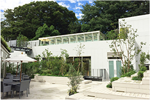
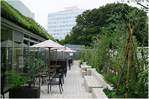
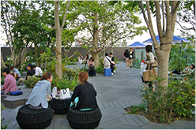

実績紹介
Works
都市開発
植栽、大径木の移植、壁面緑化、屋上緑化など様々な緑化技術を駆使し、
自然との調和、環境創造を目指します。
東急プラザ銀座
「KIRIKO TERRACE」
「SEGES：シージェス（社会・環境貢献緑地評価システム）：都市のオアシス（2016年）」認定サイト


竣工：2016年（植栽工事）
所在地：東京都中央区
事業主：東急不動産
担当業務：実施設計、施工（植栽工事）
【季節変化と植物の多様性を演出する“緑絵巻”】
東京・銀座の地上60ｍという立地における最大級のパネル型壁面緑化。
花の咲く時期や紅葉などの季節変化、各々の植物が有する色彩の多様性を横長に連続したパネルで表現している。
新青山東急ビル


竣工：2012年（植栽工事）
所在地：東京都渋谷区
事業主：東急不動産
担当業務：施工（植栽工事）
【緑のネットワークで人と自然をつなぐ】
開放型の都心の森を創出して周辺緑地との景観、生態系のネットワークに配慮した。
生きものの好む植物や四季を感じる山野草を配し、人と自然をつなぐ空間になっている。
キュープラザ原宿
グッドデザイン賞「公共用の建築・施設部門」受賞（2015年）


- 
- 
竣工：2015年（植栽工事）
所在地：東京都渋谷区
事業主：東急不動産
担当業務：実施設計、施工（植栽工事）
【コメント】
キュープラザ原宿のコメントキュープラザ原宿のコメントキュープラザ原宿のコメント
キュープラザ原宿のコメントキュープラザ原宿のコメント
東急プラザ赤坂
オープンコリドール
「野に咲く花の回廊」
屋上・壁面・特殊緑化技術コンクール 壁面・特殊緑化部門 都市緑化機構会長賞（2014年)


竣工：2013年（特殊緑化工事）
所在地：東京都千代田区
事業主：東急不動産
担当業務：計画、設計施工（特殊緑化工事）
【自然の彩りが連続する空中庭園の演出】
バイオキューブを連続配置し、里山に見られる草花を植えることで四季折々の彩りが連なる景観を創出している。
また、みどりのカーテンとなるクライムサポートや誘引緑化フェンスにより周辺からの景観に配慮した。
東急プラザ表参道原宿
「おもはらの森」
屋上・壁面・特殊緑化技術コンクール 屋上緑化部門 日経新聞社賞（2013年)


- 
竣工：2012年（植栽工事）
所在地：東京都渋谷区
事業主：東急不動産
担当業務：施工（植栽工事）
【緑のネットワークで人と自然をつなぐ】
開放型の都心の森を創出して周辺緑地との景観、生態系のネットワークに配慮した。
生きものの好む植物や四季を感じる山野草を配し、人と自然をつなぐ空間になっている。
トツカーナ

竣工：2012年（壁面緑化工事・屋上緑化工事）
所在地：神奈川県横浜市戸塚区
発注者：東急不動産
担当業務：設計施工（壁面緑化工事・屋上緑化工事）
【建築のファサードデザインと景観美化の役割を担う】
アースウォールによるみどりが建築のファサードデザインの一部となるように計画。
街並みや周辺への景観に配慮し、駅やホームにいても触れることができるやさしいみどりを創出している。
キャピタルマークタワー

竣工：2007年（外構造園工事）
所在地：東京都港区
事業主：東急不動産
担当業務：施工（外構造園工事）
【都会の四季を五感で感じるランドスケープ】
奥行きのある公開空地が、都市のオアシスとなる緑化計画。
樹木や野鳥の誘致木を植え、段丘・カスケードなど「みどり」と「水」が潤いのある空間を実現している。